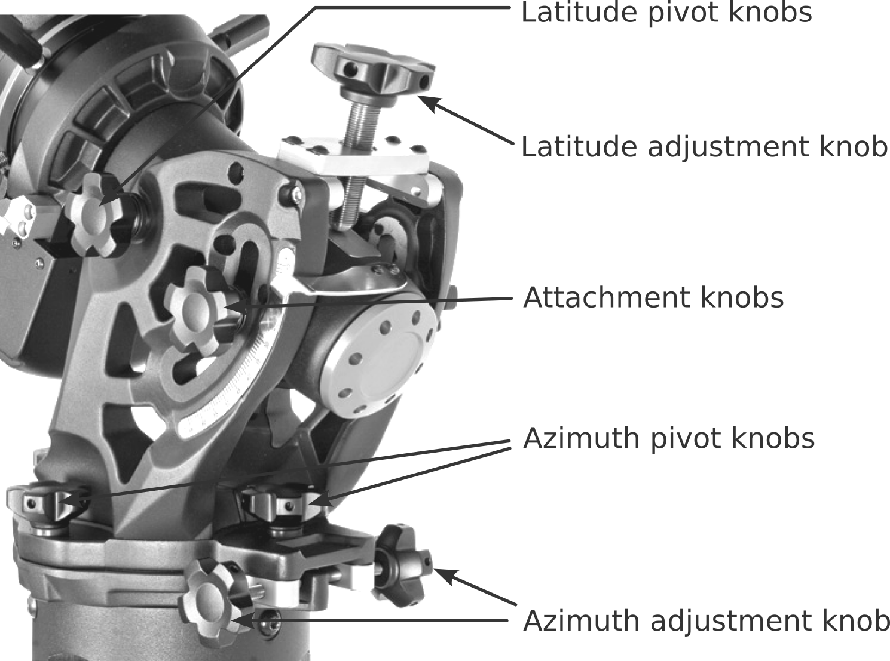

Telescope Balance & Alignment
Contents
3. Telescope Balance & Alignment#
Proper telescope balance and alignment are crucial to ensure proper pointing, and tracking and to eliminate undue stress on the telescope mount. Under normal observing conditions balance and alignment should not be neccessary but if pointing or tracking accuracy is significantly degraded or if cameras or other accessories significantly change the weight distribution it may be required.
The telescope and counter-weights are heavy and balancing and alignment require loosening of telsescope clutches and dovetail plate. For this reason it is best that these procedures be conducted with the help ao an assistant. If you are not comfortable with the procedures or need assistance, notify the observatory director of any alignment or balance issues and and they will make arrangements to provide you with assistance.
3.1. Telescope balance#
Before balancing the telescope mount all cameras and accesories that you intend to use during your observing session including eyepieces for both the SCT and William Optics APO. Small differences in eyepiece weight should not make an appreciable difference. Try to ensure a symetrical distribution of weight. Accessories mounted to the side, off the axis of rotation, will make it difficult to get a proper balance. Ensure all cables and power cords are properly routed and that the scope can move through it’s entire range of motion without binding.
Warning
When balancing, always make sure that you have physical control of the telescope before loosening the clutches. An out of balance mount can move very quickly and can cause damage to the tube or mount.
Tip
If you are balancing the scope to accomodate your equipment mark the position of the counterweights and dovetail to make it easier to return it to the original configuration afterwards.
3.1.1. Balancing the mount in Dec#
The telescope mount only tracks in RA so precise balance along the Dec axis is not as crucial but should be reasonably well balanced to minimize stress on the mount and prevent it from swinging freely when the Dec clutch is released.
Verify that the telescope is securely attached to the telescope mounting dovetail and that all accessories are securly mounted.
Loosen the R.A. clutch knobs and rotate the telescope to one side of the mount with counterweight bar extended horizontally on the opposite side of the mount. Hand tighten the RA clutch knob to hold the scope in place.
Loosen the Dec clutch lock lever and rotate the telescope until the tube is parallel to the ground.
Allow the scope to rotate around the declination axis to see which way it goes. If it is front heavy it will need to slide back, if it is rear heavy it will need to slide forward.
Rotate the scope back to the top with the counterweight bar pointing down before loosening the dovetail plate knobs.
Slightly loosen the knobs that holds the telescope to the mounting dovetail and slide the telescope either forward or backward. Do not let go of the telescope tube while the knob on the mounting platform is loose.
Recheck the balance and repeat steps 2–6 until the Dec is balanced.
Rotate the tube so that it is parralell with the ground and securely tighten all knobs.
3.1.2. Balancing the mount in RA#
For accurate tracking and to eliminate stress on the mount, the telescope must be properly balanced around the polar axis.
Again, verify that the telescope is securely attached to the telescope mounting dovetail and that all accessories are securly mounted.
Loosen the R.A. clutch knobs and rotate the telescope to one side of the mount with counterweight bar extended horizontally on the opposite side of the mount.
Allow the telescope to rotate around the RA ais to se wich way it rolls.
Rotate the scope back to where the counterweight bar is horizontal and loosen the set screws on the side of the counterweight.
Slide the counterwieghts left or right to the point where the scope does not rotate freely in RA when the clutches are released. Do not allow the counterweight bar to rotate down while the counterweights are loose.
Rotate the scope back to the top position and retighten all locking knobs.
Note
For improved tracking it is recomened that the RA axis is balanced slightly east heavy. This means that if the scope is on the east side it should be slightly heavier to the scope side, if the scope is on the west side it should be slightly heavier to the counterweight side. This will help to compensate for any backlash in the drive train.
3.2. Polar alignment#
For the telescope to track properly the mount RA axis must be aligned with the Earth’s axis of rotation with the azimuth aligned true north and the elevation set to the latitude of the observatory. This is known as polar alignment. Polar alignment of the telescope should not be neccessary unless the mount and scope have been removed for maintenence or cleaning. If objects in the field of view tend to drift over short periods of time the mount my require a polar alignment.

3.2.1. All-Star Polar Alignment#
You can check the polar alignment of the mount with the All-star polar alignment feature of the controller.